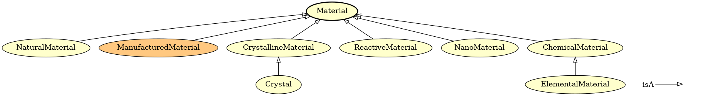

Instructions for tools available in EMMOntoPy¶
Content:
emmocheck¶
Tool for checking that ontologies conform to EMMO conventions.
Usage¶
emmocheck [options] iri
Options¶
positional arguments:
iri File name or URI to the ontology to test.
optional arguments:
-h, --help show this help message and exit
--database FILENAME, -d FILENAME
Load ontology from Owlready2 sqlite3 database. The
`iri` argument should in this case be the IRI of the
ontology you want to check.
--local, -l Load imported ontologies locally. Their paths are
specified in Protégé catalog files or via the --path
option. The IRI should be a file name.
--catalog-file CATALOG_FILE
Name of Protégé catalog file in the same folder as the
ontology. This option is used together with --local
and defaults to "catalog-v001.xml".
--path PATH Paths where imported ontologies can be found. May be
provided as a comma-separated string and/or with
multiple --path options.
--check-imported, -i Whether to check imported ontologies.
--verbose, -v Verbosity level.
--configfile CONFIGFILE, -c CONFIGFILE
A yaml file with additional test configurations.
--skip, -s ShellPattern
Shell pattern matching tests to skip. This option may be
provided multiple times.
--url-from-catalog, -u
Get url from catalog file.
--ignore-namespace, -n
Namespace to be ignored. Can be given multiple times
Examples¶
emmocheck http://emmo.info/emmo/1.0.0-alpha2
emmocheck --database demo.sqlite3 http://www.emmc.info/emmc-csa/demo#
emmocheck -l emmo.owl (in folder to which emmo was downloaded locally)
emmocheck --check-imported --ignore-namespace=physicalistic --verbose --url-from-catalog emmo.owl (in folder with downloaded EMMO)
emmocheck --check-imported --local --url-from-catalog --skip test_namespace emmo.owl
Example configuration file¶
Example of YAML configuration file provided with the --configfile option that will omit myunits.MyUnitCategory1 and myunits.MyUnitCategory1 from the unit dimensions test.
test_unit_dimensions:
exceptions:
- myunits.MyUnitCategory1
- myunits.MyUnitCategory2
ontoversion¶
Prints version of an ontology to standard output.
This script uses RDFLib and the versionIRI tag of the ontology to infer the version.
Usage¶
ontoversion [options] iri
Special dependencies¶
rdflib(Python package)
Options¶
positional arguments:
IRI IRI/file to OWL source to extract the version from.
optional arguments:
-h, --help show this help message and exit
--format FORMAT, -f FORMAT
OWL format. Default is "xml".
Examples¶
ontoversion http://emmo.info/emmo/1.0.0-alpha
Warning
Fails if ontology has no versionIRI tag.
ontograph¶
Tool for visualizing ontologies.
Usage¶
ontograph [options] iri [output]
Dependencies¶
- Graphviz
Options¶
positional arguments:
IRI File name or URI of the ontology to visualise.
output name of output file.
optional arguments:
-h, --help show this help message and exit
--format FORMAT, -f FORMAT
Format of output file. By default it is inferred from
the output file extension.
--database FILENAME, -d FILENAME
Load ontology from Owlready2 sqlite3 database. The
`iri` argument should in this case be the IRI of the
ontology you want to visualise.
--local, -l Load imported ontologies locally. Their paths are
specified in Protégé catalog files or via the --path
option. The IRI should be a file name.
--catalog-file CATALOG_FILE
Name of Protégé catalog file in the same folder as the
ontology. This option is used together with --local
and defaults to "catalog-v001.xml".
--path PATH Paths where imported ontologies can be found. May be
provided as a comma-separated string and/or with
multiple --path options.
--reasoner [{FaCT++,HermiT,Pellet}]
Run given reasoner on the ontology. Valid reasoners
are "FaCT++" (default), "HermiT" and "Pellet".
Note: FaCT++ is preferred with EMMO.
--root ROOT, -r ROOT Name of root node in the graph. Defaults to all
classes.
--leafs LEAFS Leafs nodes for plotting sub-graphs. May be provided
as a comma-separated string and/or with multiple
--leafs options.
--exclude EXCLUDE, -E EXCLUDE
Nodes, including their subclasses, to exclude from
sub-graphs. May be provided as a comma-separated
string and/or with multiple --exclude options.
--parents N, -p N Adds N levels of parents to graph.
--relations RELATIONS, -R RELATIONS
Comma-separated string of relations to visualise.
Default is "isA". "all" means include all relations.
--edgelabels, -e Whether to add labels to edges.
--addnodes, -n Whether to add missing target nodes in relations.
--addconstructs, -c Whether to add nodes representing class constructs.
--rankdir {BT,TB,RL,LR}
Graph direction (from leaves to root). Possible values
are: "BT" (bottom-top, default), "TB" (top-bottom),
"RL" (right-left) and "LR" (left-right).
--style-file JSON_FILE, -s JSON_FILE
A json file with style definitions.
--legend, -L Whether to add a legend to the graph.
--generate-style-file JSON_FILE, -S JSON_FILE
Write default style file to a json file.
--plot-modules, -m Whether to plot module inter-dependencies instead of
their content.
--display, -D Whether to display graph.
Examples¶
The figure below is generated with the following command:
ontograph --root=Material --relations=all --legend emmo-inferred material.png

ontodoc¶
Tool for documenting ontologies.
Usage¶
ontodoc [options] iri outfile
Dependencies¶
- pandoc
- pdflatex or xelatex
Options¶
positional arguments:
IRI File name or URI of the ontology to document.
OUTFILE Output file.
optional arguments:
-h, --help show this help message and exit
--database FILENAME, -d FILENAME
Load ontology from Owlready2 sqlite3 database. The
`iri` argument should in this case be the IRI of the
ontology you want to document.
--local, -l Load imported ontologies locally. Their paths are
specified in Protégé catalog files or via the --path
option. The IRI should be a file name.
--imported, -i Include imported ontologies
--no-catalog, -n Do not read url from catalog even if it exists.
--catalog-file CATALOG_FILE
Name of Protégé catalog file in the same folder as the
ontology. This option is used together with --local
and defaults to "catalog-v001.xml".
--path PATH Paths where imported ontologies can be found. May be
provided as a comma-separated string and/or with
multiple --path options.
--reasoner [{FaCT++,HermiT,Pellet}]
Run given reasoner on the ontology. Valid reasoners
are "FaCT++" (default), "HermiT" and "Pellet".
Note: FaCT++ is preferred with EMMO.
--template FILE, -t FILE
ontodoc input template. If not provided, a simple
default template will be used. Don't confuse it with
the pandoc templates.
--format FORMAT, -f FORMAT
Output format. May be "md", "simple-html" or any other
format supported by pandoc. By default the format is
inferred from --output.
--figdir DIR, -D DIR Default directory to store generated figures. If a
relative path is given, it is relative to the template
(see --template), or the current directory, if
--template is not given. Default: "genfigs"
--figformat FIGFORMAT, -F FIGFORMAT
Format for generated figures. The default is inferred
from --format."
--max-figwidth MAX_FIGWIDTH, -w MAX_FIGWIDTH
Maximum figure width. The default is inferred from
--format.
--pandoc-option STRING, -p STRING
Additional pandoc long options overriding those read
from --pandoc-option-file. It is possible to remove
pandoc option --XXX with "--pandoc-option=no-XXX".
This option may be provided multiple times.
--pandoc-option-file FILE, -P FILE
YAML file with additional pandoc options. Note, that
default pandoc options are read from the files
"pandoc-options.yaml" and "pandoc-FORMAT-options.yaml"
(where FORMAT is format specified with --format). This
option allows to override the defaults and add
additional pandoc options. This option may be provided
multiple times.
--keep-generated FILE, -k FILE
Keep a copy of generated markdown input file for
pandoc (for debugging).
Examples¶
Basic documentation of an ontology demo.owl can be generated with:
ontodoc --format=simple-html --local demo.owl demo.html
See examples/emmodoc/README.md for how this tool is used to generate the html and pdf documentation of EMMO itself.
ontoconvert¶
Tool for converting between different ontology formats.
Usage¶
ontoconvert [options] inputfile outputfile
Dependencies¶
rdflib(Python package)
Options¶
positional arguments:
INPUTFILE Name of inputfile.
OUTPUTFILE Name og output file.
optional arguments:
-h, --help show this help message and exit
--input-format, -f INPUT_FORMAT
Inputformat. Default is to infer from input.
--output-format, -F OUTPUT_FORMAT
Default is to infer from output.
--no-catalog, -n Do not read catalog even if it exists.
--inferred, -i Add additional relations inferred by the FaCT++ reasoner to the converted ontology. Implies --squash.
--base-iri BASE_IRI, -b BASE_IRI
Base iri of inferred ontology. The default is the base
iri of the input ontology with "-inferred" appended to
it. Used together with --inferred.
--recursive, -r The output is written to the directories matching the input. This requires Protege catalog files to be present.
--squash, -s Squash imported ontologies into a single output file.
Examples¶
ontoconvert --recursive emmo.ttl owl/emmo.owl
ontoconvert --inferred emmo.ttl emmo-inferred.owl
Note, it is then required to add the argument only_local=True when loading the locally converted ontology in EMMO-python, e.g.:
from ontopy import get_ontology
emmo_ontology = get_ontology("emmo.owl").load(only_local=True)
Since the catalog file will be overwritten in the above example writing output to a separate directory is useful.
ontoconvert --recursive emmo.ttl owl/emmo.owl
Bugs¶
Since parsing the results from the reasoner is currently broken in Owlready2 (v0.37), a workaround has been added to ontoconvert. This workaround only only supports FaCT++. Hence, HermiT and Pellet are currently not available.
excel2onto¶
Tool for converting EMMO-based ontologies from Excel to OWL, making it easy for non-ontologists to make EMMO-based domain ontologies.
The Excel file must be in the format provided by ontology_template.xlsx.
Usage¶
excel2onto [options] excelpath
Dependencies¶
pandas(Python package)
Options¶
positional arguments:
excelpath path to excel book
options:
-h, --help show this help message and exit
--output OUTPUT, -o OUTPUT
Name of output ontology, ´ontology.ttl´ is default
--force, -f Whether to force generation of ontology on non-fatal
error.
Examples¶
Create a new_ontology.ttl turtle file from the Excel file new_ontology.xlsx:
excel2onto -o new_ontology.ttl new_ontology.xlsx
Bugs¶
equivalentTo is currently not supported.